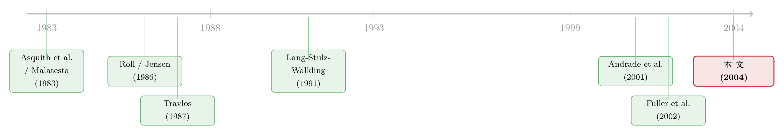

赚了 1.1%，却亏掉 3030 亿：并购里那个被「平均」藏起来的规模效应
本文读的是 Moeller, Schlingemann & Stulz (2004, JFE)：用 1980–2001 年 12,023 起收购的大样本，他们发现收购方股东平均能赚 1.10% 的公告超额收益，但平均每笔交易股东财富却减少了 2520 万美元。这条看似矛盾的裂缝，背后是一个稳健的「规模效应」——小公司是好买家，大公司不是；整个样本的净亏损，几乎全是大公司一手造成的。
1 一个自相矛盾的开场
先讲一个让人愣住的数字游戏。
如果你去翻并购的事件研究 (event study)，问「收购方股东到底赚不赚钱」，你大概率会得到一个温和而正面的答案：平均超额收益 (abnormal return) 是正的。Moeller、Schlingemann 与 Stulz 这篇文章里，这个数字是 1.10%，在统计上高度显著，中位数 0.36% 也显著。换算一下，相当于每花 100 美元去收购，股东就赚 5.61 美元。听上去，并购是一门划算的生意。
可是，同一个样本、同一段时间、同一批公司，如果你不去算「百分比」，而是去算「美元」，结论会整个翻过来：从 1980 到 2001 年，这些公司一共花了大约 3.4 万亿美元做收购，而它们股东的财富，总共缩水了 3030 亿美元（按 2001 年不变价）。平均到每一笔交易，是 −2520 万美元。
同一批交易，等权 (equally-weighted) 平均收益是 +1.10%，而美元加总却是 −3030 亿。一个赚，一个亏，符号相反。这不是算错了，而是一个信号：样本里藏着一个规模效应。
这就是全文的张力所在。百分比和美元为什么会打架？什么样的世界里，「每笔交易平均赚钱」与「股东总共亏了三千亿」能同时成立？这篇文章接下来要做的，就是把这条裂缝一点点撬开，最后告诉你：它不是会计假象，而是一个关于「公司规模」的、出奇稳健的事实。
2 百分比与美元为什么会打架
要理解这件事，得先回到那把丈量财富变化的尺子。
传统做法是算百分比超额收益。本文用的是市场模型 (market model)，事件窗口取公告日前后三天 (−1, +1)，基准用 CRSP 等权指数，市场模型参数在 (−205, −6) 这段区间估计。这套办法没有任何新意，是 Brown and Warner (1985) 以来的标准动作。问题不在方法，而在「平均」这个动作本身：等权平均，会把一家市值 1 亿美元的小公司和一家市值 1000 亿美元的巨头同等看待——它们各占一票。
但一个给定的百分比收益，落在不同体量的公司身上，经济意义天差地别。1000 亿市值的公司跌 1%，是 10 亿美元的财富蒸发；1 亿市值的公司涨 2%，不过是 200 万美元。于是 Malatesta (1983) 提出了另一把尺子——美元超额收益 (dollar abnormal return)：把超额收益率乘以公司的股权市值，得到事件窗口内股东财富的实际美元变化。
接着，一个自然的问题是：这两把尺子什么时候会指向相反的方向？
答案是：当大公司和小公司的公告收益不一样的时候。如果小公司公告收益为正、大公司为负，那么等权平均（一家一票）会被数量众多的小公司抬成正数；而美元加总（按市值加权）会被体量庞大的大公司压成负数。本文里的价值加权 (value-weighted) 平均收益正是 −1.18%，它本质上就是「美元超额收益之和 ÷ 收购方总市值」，因此天然反映的是大公司的命运。
到这里，逻辑已经呼之欲出：百分比和美元打架，当且仅当收益率随公司规模而系统性地变号。那就去验证它。
3 把样本劈成两半：小公司是好买家
本文的样本来自 SDC 的美国并购数据库，筛选条件很干净：1980–2001 年完成的国内并购，收购方是 CRSP 与 Compustat 上的上市公司，交易额至少 100 万美元、且不低于收购方市值的 1%，最终得到 12,023 起。值得一提的是，这个样本同时囊括了对上市公司、私人公司、子公司三类标的的收购——这一点后面很关键。「大」「小」的切分标准是：收购方市值是否低于当年 NYSE 公司市值的 25 分位数，低于的算小公司。样本里大、小公司大致各占一半（6,520 vs 5,503）。
把样本一劈两半，那条裂缝立刻显形：
- 大公司：等权超额收益只有
0.076%，统计上不显著；价值加权收益 −1.25%。 - 小公司：等权超额收益
2.318%，价值加权收益1.27%，都显著为正。 - 两者之差 −
2.242%，在 1% 水平上显著。中位数之差同样显著。
再看美元这一栏，画面更刺眼：小公司平均每笔交易给股东赚 170 万美元，加总下来整个期间约赚 90 亿美元；大公司平均每笔亏 4790 万美元，加总约亏 3120 亿美元。换句话说——
整个样本「净亏 3030 亿」并不是大家一起亏，而是小公司赚的那点钱，被大公司亏的钱彻底淹没了。小买家赚 90 亿，大买家亏 3120 亿，相抵就是那个触目惊心的负数。
这就是本文定义的规模效应 (size effect)：小收购方的超额收益减去大收购方的超额收益，是一个显著为正、约两个百分点的缺口。而且作者强调，这个缺口在公开标的、私人标的、子公司三类收购里都站得住，也不论付现金还是付股票——它是一个横跨各种交易形态的普遍现象。
到这一步，悬念解开了一半：百分比和美元确实因为规模而变号。但真正关键的一步还没走——这个规模效应，会不会只是别的东西的影子？
4 真正关键的一步：它不是任何已知特征的影子
这才是全文最硬的部分。因为一个有经验的读者立刻会反驳：小公司和大公司本来就「长得不一样」，规模效应说不定只是这些差异的伪装。文献早就发现一堆能解释收购方收益的因素，得一个一个排除。
作者把矛头对准三类嫌疑：
其一，标的的组织形式。 收购私人公司或子公司，往往比收购上市公司更赚钱——Fuller, Netter and Stegemoller (2002) 已经证明了这一点（直觉是：私人标的卖家少、议价弱，存在「流动性折价」）。而本文样本里，收购上市公司的买家里只有约四分之一是小公司，收购私人公司的买家里却有一半是小公司。会不会规模效应只是「小公司更爱买便宜的私人标的」？
其二，支付方式。 Travlos (1987) 指出，用股票支付收购上市公司，公告收益更低（因为发股票本身是「我的股价被高估了」的信号，见 Myers and Majluf, 1984）。而小公司更偏好现金支付。会不会规模效应只是「支付方式」的另一种说法？
其三，公司与交易特征。 文献里 Lang, Stulz and Walkling (1991) 与 Servaes (1991) 发现高 Tobin's q 的买家收益更高；Asquith, Bruner and Mullins (1983) 发现相对规模（标的市值 / 收购方市值）越大、买家收益越高——而小公司的相对交易规模恰恰更大（中位数 0.186 vs 大公司 0.080）。这些都得控制住。
然后，作者用多元回归把上述特征一股脑全塞进去控制，再看规模效应还在不在。结论斩钉截铁：
在所有回归设定里，规模效应的估计值都为正，且在 1% 水平上显著异于零。
也就是说，控制了标的类型、支付方式、相对规模、Tobin's q、杠杆、行业、年份……规模效应纹丝不动。它不是任何一个已知特征的影子，而是一个独立存在的事实。比较「同类交易」时——同样收购私人公司、同样付现金——小买家照样比大买家多赚约两个百分点。
5 于是反转：那到底是谁的错？
事实立住了，可经济学的好奇心才刚开始：为什么大公司是糟糕的买家？
文献里早就攒了一柜子解释收购方负收益的假说。作者的策略很聪明：这些假说要想解释规模效应，就必须「对大公司比对小公司更适用」。于是逐一审问：
- 自负假说 (hubris hypothesis, Roll 1986)：经理人高估自己创造协同的能力，于是出价过高。它对大公司更适用吗？很可能——大公司经理人社会地位更高、资源更多、阻力更小，更容易上头。证据是：大公司支付的溢价随规模上升（控制特征后依然），且大公司更可能把交易做成 (more likely to complete)。这都与「大公司经理人更自负」一致。
- 自由现金流假说 (free cash flow hypothesis, Jensen 1986)：手握大把闲钱、又没有好项目的经理人，宁可去买买买也不愿把钱还给股东（关于这条经典逻辑，可参见《现金为什么一定要「还」出去？——四十年后，重读 Jensen 的自由现金流》）。大公司的结果看上去符合代理成本的叙事，但作者明说：对自由现金流假说本身，证据其实很弱。
- 高估值假说 (overvaluation hypothesis, Dong et al. 2002)：公司之所以「大」，可能是因为股价被高估了，而高估的股票去做收购，公告时会被市场看穿。这个假说被作者直接证伪了——下面单说，因为它最漂亮。
为什么 hubris 在大公司更严重，是有微观基础的。Demsetz and Lehn (1985) 早就发现，小公司经理人通常持有更多自家股份，激励与股东更对齐；大公司经理人持股少、更可能「帝国建造」。所以「规模」在这里其实是「代理问题严重程度」的一个代理变量。（关于经理人过度自信如何写进并购决策，另见《经理人的「过度自信」，其实藏在波动率里》。）
6 一记漂亮的证伪：用账面资产换掉市值
我想单独把这一招拎出来讲，因为它是全文方法论上最优雅的一笔。
高估值假说有一个看似无懈可击的逻辑：大公司之所以大，是因为股权市值被市场吹高了；高估的公司去收购，市场借机修正其估值，于是公告收益为负。如果规模效应真是这么来的，那它就该在「换一把尺子量规模」时消失。
关键在于：一家公司股权的市场价值会被高估污染，但它资产的账面价值 (book value of assets) 不会——账面资产是会计数字，与股价是否被高估基本无关。所以作者做了一个干净的替换：用账面资产、而非股权市值来定义大小公司，重新跑一遍。
如果高估值是元凶，规模效应应当烟消云散。结果呢？规模效应依然成立。这一记反证，几乎一刀切掉了「大公司收益差只是因为它们被高估」的可能。这种「找一个不被嫌疑机制污染的替代度量，看结论是否还在」的思路，值得每一个做实证的人收藏。
此外，作者还顺手堵死了「市场会纠错」这条退路：如果市场系统性地高估了大公司的收购、低估了小公司的，那事后应当出现反向漂移（大公司收购后跑赢、小公司跑输）。但数据里没有这种反转——市场在公告日就把信息相当有效地定价了。所以规模效应不是一个会被时间抹平的错误，它是真实的。
7 文献脉络
把这篇文章放回它的谱系里看，会更清楚它站在哪。
并购收益的研究，最早绕不开两条线。一条是怎么量：Asquith, Bruner and Mullins (1983) 系统记录了收购方的收益，并发现相对规模越大收益越高；Malatesta (1983) 则贡献了那把后来被本文用到极致的「美元超额收益」尺子。另一条是为什么是负的：Roll (1986) 提出自负假说，Jensen (1986) 提出自由现金流假说，Travlos (1987) 把目光投向支付方式与信号，Myers and Majluf (1984) 给出了发股票即「被高估」信号的理论根基。

进入 1990 年代，文献开始精细化。Lang, Stulz and Walkling (1991) 与 Servaes (1991) 把 Tobin's q 引入收购方收益；Chang (1998) 与 Fuller, Netter and Stegemoller (2002) 揭示了一个反直觉的事实——收购私人标的，即便用股票支付，收益也不低，这与收购上市公司截然不同。Andrade, Mitchell and Stafford (2001) 则给出了被广泛引用的「收购方收益不显著为负」的综述图景。
本文 (Moeller, Schlingemann and Stulz, 2004) 的位置因此清晰：它不是又发现一个新假说，而是用一个前所未有的大样本（12,023 起，横跨三类标的、二十二年），把「收购方到底赚不赚钱」这个老问题，按规模重新切了一刀，并指出此前文献在等权与价值加权之间的口径分歧，本质上来自一个未被命名的规模效应。它是一篇「重新丈量」的文章，而重新丈量，有时比提出新理论更有价值。
8 评论与延伸（Q&A + 研究方向）
(a) 几个可能的疑问
Q：等权平均 +1.1% 和美元加总 −3030 亿，到底哪个才是「真相」？
两个都是真相，只是回答了不同的问题。等权收益回答「一笔典型的收购划不划算」，答案偏正面；美元加总回答「并购作为一项经济活动，给全体股东创造还是毁灭了价值」，答案是毁灭。本文的洞见恰恰是：在存在规模效应时，你选哪把尺子，就决定了你会得出哪种结论——所以两个都得报。
Q：会不会是小公司的收购「更出人意料」，所以公告反应更大，制造了虚假的规模效应？
这是个好质疑，但作者反驳得很干净：如果大公司的公告被「预期」提前消化、收益被拉向零，那么在大公司收益本就为负的那类交易里，规模效应只会被低估而非高估。换句话说，这种偏误若存在，真实的规模效应比报告的还要大。
Q：把账面资产当规模尺子，就能完全排除高估值假说吗？
不能说「完全」，但相当有力。账面资产与股价高估近似无关，所以若规模效应在账面口径下依然存在，高估值至多只是部分原因，不可能是主因。这是一个识别上的巧思，而非铁证——账面资产仍可能与别的东西（如公司年龄、生命周期阶段）相关。
Q：「大公司协同收益为负」是真没有协同，还是公告同时泄露了关于收购方自身的坏消息？
作者诚实地承认这个内生性无法完全排除。按 Bradley, Desai and Kim (1988) 的算法，大公司收购的合并美元协同为负、小公司为正；但大公司的负值，可能来自收购公告顺带揭示了收购方自身的不利信息，而非收购本身毁了价值。只是，为什么偏偏是大收购方泄露了更多坏消息，仍缺一个干净的解释。
Q：这个规模效应，是不是只在某几个泡沫年份成立？
不是。美元超额收益在二十二年里只有七年为正，负值不是被少数年份带偏的；规模效应也没有随时间反转。它是一个跨周期的稳健事实，而非某段牛市的产物。
Q：那现实启示是什么——大公司就不该做收购？
文章没那么武断。它说的是「平均而言，大收购方毁灭股东价值」，且这与代理问题（hubris、激励不对齐）一致。含义更像是治理层面的：对大公司的收购决策，董事会与股东应当施加更强的约束，因为那里的代理成本更可能咬人。
(b) 几个可能的研究问题与提案
1. 规模效应在债权人那一侧是什么符号？
【经济故事】股东在大公司收购里亏钱，若亏损部分来自风险转移或多元化降低违约概率，债权人可能反而受益——这是一个经典的「股债再分配」问题。【可行性】高。用 TRACE 公司债日度价格做收购公告的事件研究，按收购方规模分组看信用利差变化，识别清晰，数据现成。（方法上可参照《刚跨过「大到不能倒」那道线，债主就笑了》。）
2. 外资持有人能否驯服大公司的「自负溢价」？
【经济故事】本文把规模效应归到代理问题。那么，治理质量更高的股东结构——比如积极的外国机构投资者——是否能压低大收购方支付的溢价、改善其公告收益？【可行性】中。需把 FactSet/13F 的机构持股（区分境内外）与 SDC 收购匹配，识别上要担心机构持股本身的内生性，可借指数纳入等外生冲击做工具。
3. 把「美元 vs 百分比」的口径分歧推广到其他公司事件。
【经济故事】若规模效应让并购的两把尺子打架，那增发、回购、重大投资公告里是否也存在同样的「等权赚、加权亏」？这关系到我们如何评价一整类公司决策的总福利。【可行性】高。纯用 CRSP/Compustat 做多事件类型的对照事件研究即可，工作量大但无识别难点。
4. 大公司收购后的真实经营后果，而不只是公告反应。
【经济故事】公告收益衡量的是市场预期；但大收购方是否真的在收购后出现了经营效率下滑、资源错配？这能把「市场怀疑」与「事后兑现」对上。【可行性】中。需用收购后 3–5 年的经营现金流、生产率（如 Compustat + 工厂级数据）做匹配样本 DiD，难点在反事实的构造与选择性。
5. 私人标的「流动性折价」与规模效应的交互。
【经济故事】小公司既更爱买私人标的、收益又更高。私人标的的流动性折价究竟贡献了规模效应的几成？把「便宜买」和「代理问题轻」两条机制分开，是有意思的。【可行性】中。本文已控制标的类型，但要做正式分解需私人标的的估值数据，识别上偏依赖结构假设。
9 我的判断
这篇文章的贡献，不在于一个新模型或新假说，而在于一次口径上的正本清源。它用一个当时前所未有的大样本，指出了并购实证里一个长期被「平均」二字掩盖的事实：收购方的命运随规模而系统性地分叉，而文献此前在等权与价值加权之间的来回拉扯，根子就在这里。把这件事讲清楚、并证明它对几乎所有控制变量都稳健，本身就是一流的实证工作。其中「用账面资产替换市值来证伪高估值假说」一招，是教科书级别的识别巧思。
但我也有两点保留。其一是机制的归因。 文章把规模效应漂亮地立了起来，却没能把「为什么大公司差」钉死在某一个假说上——hubris 有间接证据（溢价随规模升、大公司更易成交），自由现金流证据偏弱，高估值被证伪，但留下的解释空间仍然含混。「大」终究是一个相关于太多东西的变量。其二是公告收益的内生性。 大收购方的负协同，究竟是收购毁了价值，还是公告顺手泄露了收购方自身的坏消息，本文坦承无法分离——而这恰恰是评价「并购好坏」的要害。
后续我最想看到的，是把视角从「公告那三天的市场预期」推到「收购后若干年的真实经营与现金流」，并引入债权人一侧的反应，看看大公司毁掉的股东价值，是凭空蒸发了，还是只是换了个口袋。在公司债与外资持有人这两条线上，这篇二十年前的文章，仍留着不少干净的题目。
参考文献
Andrade, G., Mitchell, M., Stafford, E. (2001). New evidence and perspectives on mergers. Journal of Economic Perspectives 15, 103–120.
Asquith, P., Bruner, R., Mullins, D. (1983). The gains to bidding firms from merger. Journal of Financial Economics 11, 121–139.
Bradley, M., Desai, A., Kim, E.H. (1988). Synergistic gains from corporate acquisitions and their division between the stockholders of target and acquiring firms. Journal of Financial Economics 21, 3–40.
Brown, S.J., Warner, J.B. (1985). Using daily stock returns: the case of event studies. Journal of Financial Economics 14, 3–31.
Chang, S. (1998). Takeovers of privately held targets, method of payment, and bidder returns. Journal of Finance 53, 773–784.
Demsetz, H., Lehn, K. (1985). The structure of corporate ownership: causes and consequences. Journal of Political Economy 93, 1155–1177.
Fuller, K., Netter, J., Stegemoller, M. (2002). What do returns to acquiring firms tell us? Evidence from firms that make many acquisitions. Journal of Finance 57, 1763–1794.
Jensen, M.C. (1986). Agency costs of free cash flow, corporate finance, and takeovers. American Economic Review 76, 323–329.
Lang, L.H.P., Stulz, R.M., Walkling, R.A. (1991). A test of the free cash flow hypothesis: the case of bidder returns. Journal of Financial Economics 29, 315–336.
Malatesta, P. (1983). The wealth effect of merger activity and the objective function of merging firms. Journal of Financial Economics 11, 155–182.
Moeller, S.B., Schlingemann, F.P., Stulz, R.M. (2004). Firm size and the gains from acquisitions. Journal of Financial Economics 73(2), 201–228.
Myers, S.C., Majluf, N.S. (1984). Corporate financing and investment decisions when firms have information that investors do not have. Journal of Financial Economics 13, 187–221.
Roll, R. (1986). The hubris hypothesis of corporate takeovers. Journal of Business 59, 197–216.
Servaes, H. (1991). Tobin's q, agency costs, and corporate control: an empirical analysis of firm specific parameters. Journal of Finance 46, 409–419.
Travlos, N.G. (1987). Corporate takeover bids, method of payment, and bidding firm's stock returns. Journal of Finance 52, 943–963.